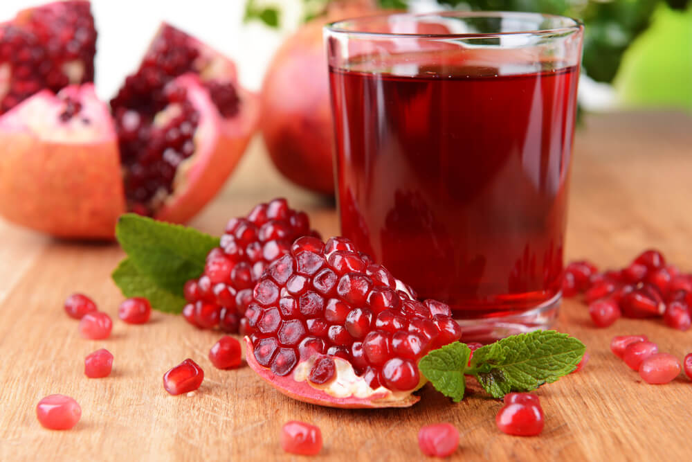

What are the Health and Nutritional Benefits of Pomegranate?
Pomegranates are low in calories and fat but high in fiber, vitamins, and minerals.
Benefits include antioxidants, heart health, urinary health, exercise endurance, and more...
Pomegranates are round, red fruits. They feature a white inner flesh that’s packed with crunchy, juicy edible seeds called arils.
They may be best known for the vibrantly colored juice they’re often used in, but these unique fruits have a lot more to offer.
This article examines the many health benefits of pomegranates.
Below is the nutrition for the arils in one average pomegranate:
Calories: 234
Protein: 4.7 grams (g)
Fat: 3.3 g
Carbohydrates: 52 g
Fiber: 11.3 g
Vitamin C: 32% of the Daily Value (DV)
Folate: 27% of the DV
Magnesium: 8% of the DV
Phosphorus: 8% of the DV
Potassium: 13% of the DV
procedure:
Wash pomegranates under running water.Cut off the crown,the top portion of the pomegranate.
Similarly cut down the bottom part of the fruit. This loosens the rind as it looses the strength on the parts.
Remove the top of the pomegranate by cutting a shallow,angled circle around the crown.Wiggle it loose and discard. Make a 4 shallow cuts on the pomegranate.
Hold 2 of the parts/segments in each hand and gently pull out to separate them.Without messing up,the fruit gets divided to 4 segments/parts. pomegranate stain the work tops and even the cloths.A few dsiposable tissues or a Kitchen cloth is helpful.
separate each segment.
Deseed to a large bowl, they come off easily.
Discard all of the yellow and white membrances.
Making pomegranate juice in a blender is surprisingly easy.Add the arils to the blender.
Add a pinch of salt and lemon if you prefer.
Blend upto 10 to 15 seconds.you want to make sure seedsare still mostly intact but the juice around the seeds is released And filter the juice to get a clear juice . And finally Consume pomegranate juice fresh before it begins to oxidize.

Here you can watch my youtube channel ,If you can't understand the process.